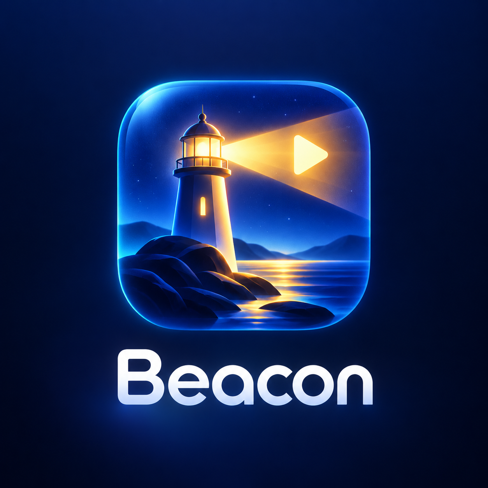

WELCOME BACK
Home
⌕

YOUR TV. YOUR WAY.
Browser edition. IPTV requests are made directly by this browser so your browser VPN extension can handle them.
Use only services and content you are authorized to access. On a shared computer, leave “Remember” off and sign out when finished.